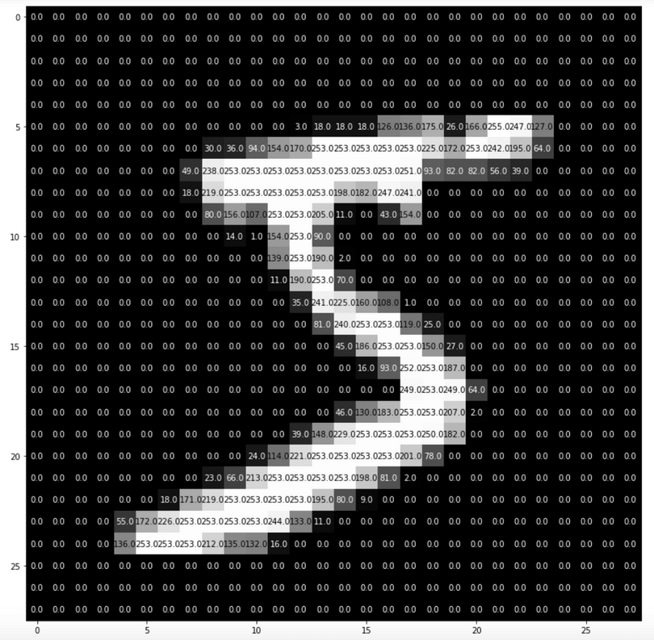

Week 7, Thursday Discussion
Contents
Week 7, Thursday Discussion¶
Today:
Introduction to the MNIST dataset ~ 25 minutes
Work through Problems #1 and #2 of Homework #6 together as a class
Independent work on Homework #6 ~ 25 minutes
Reminders:
Midterm #2 next Thursday during discussion
I will pass out notecards starting today
There is no quiz next Tuesday
What is the MNIST dataset?¶

Source: Medium.com
The MNIST dataset is a collection of 70,000 images of handwritten digits.
If I were to show you the image above and ask you to identify what number it is, that’s not too difficult of a task. But how would you program a computer to recognize handwritten digits the way your brain does – this is the focus of Homework #6.
Each image can be understood as a \(28 \times 28\) grid of pixels, where the pixel values are digits between 0 (darkest) and 255 (lightest).
Imagine that we lay out all the pixels in one row; from this perspective, each image is a point in 784-dimensional space.
Question: Imagine that the MNIST dataset was stored in a pandas dataframe df. What would be the dimensions of df?